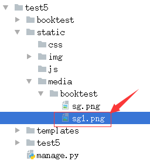
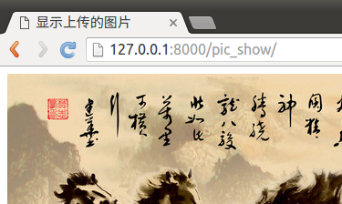

上传图片
在python中进行图片操作，需要安装包PIL。
pip install Pillow==3.4.1
在Django中上传图片包括两种方式：
- 在管理页面admin中上传图片
- 自定义form表单中上传图片
上传图片后，将图片存储在服务器上，然后将图片的路径存储在表中。
创建包含图片的模型类
将模型类的属性定义成models.ImageField类型。
1）打开booktest/models.py文件，定义模型类PicTest。
class PicTest(models.Model):
pic = models.ImageField(upload_to='booktest/')
2）回到命令行中，生成迁移。
python manage.py makemigrations
3）打开booktest/migrations/0001_initial.py文件，删除AreaInfo部分，因为这个表已经存在。

4）回到命令行中，执行迁移。
python manage.py migrate
5）因为当前没有定义图书、英雄模型类，会提示“是否删除”，输入“no”后回车，表示不删除。

6）打开test5/settings.py文件，设置图片保存路径。
因为图片也属于静态文件，所以保存到static目录下。
MEDIA_ROOT=os.path.join(BASE_DIR,"static/media")
7）在static目录下创建media目录，再创建应用名称的目录，此例为booktest。

在管理页面admin中上传图片
1）打开booktest/admin.py文件，注册PicTest。
from django.contrib import admin
from booktest.models import *
admin.site.register(PicTest)
2）运行服务器，输入如下网址。
http://127.0.0.1:8000/admin/

3）点击“Add”添加数据，打开新页面。

4）选择图片，点击“save”按钮完成图片上传。 5）回到数据库命令行，查询表pictest中的数据如下图：

6）图片被保存到目录static/media/booktest/下，如下图：

自定义form表单中上传图片
1）打开booktest/views.py文件，创建视图pic_upload。
def pic_upload(request):
return render(request,'booktest/pic_upload.html')
2）打开booktest/urls.py文件，配置url。
url(r'^pic_upload/$', views.pic_upload),
3）在templates/booktest/目录下创建模板pic_upload.html。
在模板中定义上传表单，要求如下：
- form的属性enctype="multipart/form-data"
- form的method为post
- input的类型为file
<html>
<head>
<title>自定义上传图片</title>
</head>
<body>
<form method="post" action="/pic_handle/" enctype="multipart/form-data">
{%csrf_token%}
<input type="file" name="pic"/><br>
<input type="submit" value="上传">
</form>
</body>
</html>
4）打开booktest/views.py文件，创建视图pic_handle，用于接收表单保存图片。
request对象的FILES属性用于接收请求的文件，包括图片。
from django.conf import settings
from django.http import HttpResponse
...
def pic_handle(request):
f1=request.FILES.get('pic')
fname='%s/booktest/%s'%(settings.MEDIA_ROOT,f1.name)
with open(fname,'wb') as pic:
for c in f1.chunks():
pic.write(c)
return HttpResponse('OK')
5）打开booktest/urls.py文件，配置url。
url(r'^pic_handle/$', views.pic_handle),
6）运行服务器，在浏览器中输入如下网址：
http://127.0.0.1:8000/pic_upload/

选择文件后点击按钮上传图片。
7）图片上传目录如下图：

这里只是完成图片上传的代码，如果需要保存数据到表中需要创建PicTest对象完成保存。
显示图片
1）打开booktest/views.py文件，创建视图pic_show。
from booktest.models import PicTest
...
def pic_show(request):
pic=PicTest.objects.get(pk=1)
context={'pic':pic}
return render(request,'booktest/pic_show.html',context)
2）打开booktest/urls.py文件，配置url。
url(r'^pic_show/$', views.pic_show),
3）在templates/booktest/目录下创建模板pic_show.html。
<html>
<head>
<title>显示上传的图片</title>
</head>
<body>
<img src="/static/media/{{pic.pic}}"/>
</body>
</html>
4）运行服务器，在浏览器中输入如下网址：
http://127.0.0.1:8000/pic_show/
